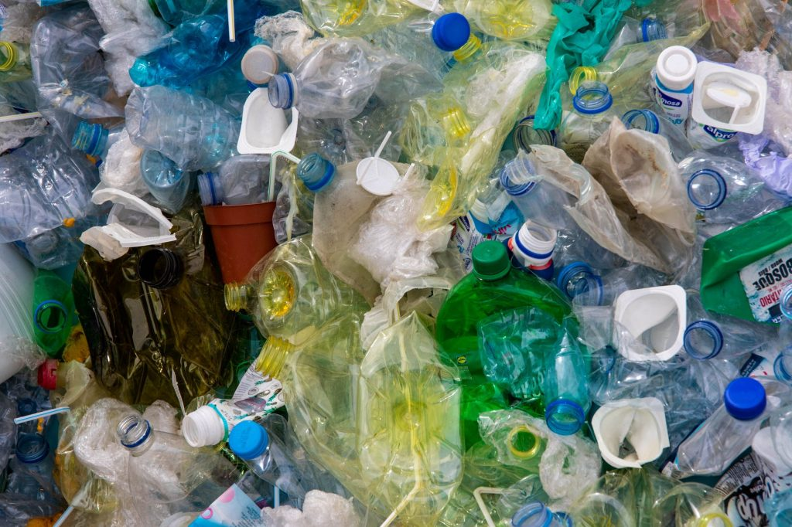
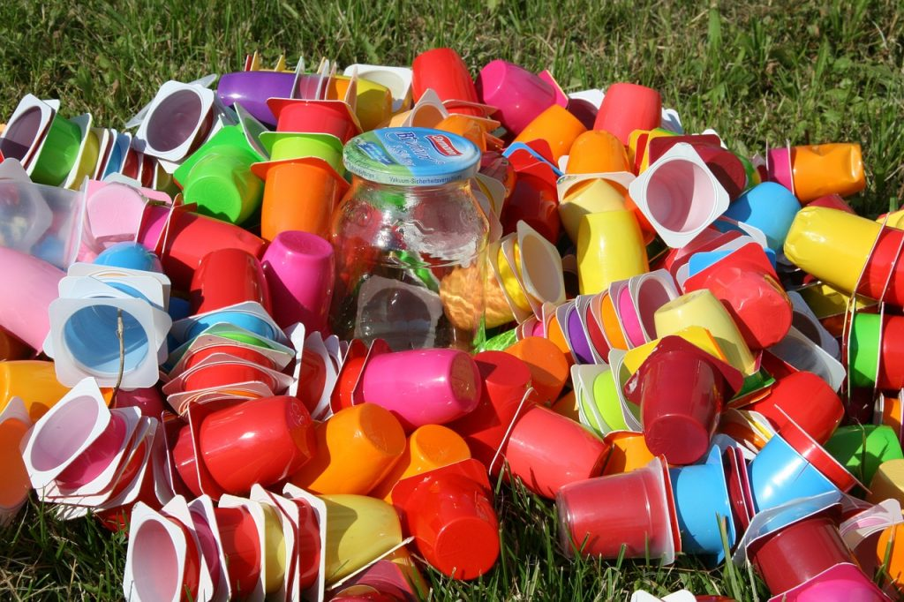

Bank sampah adalah sebuah konsep untuk mengumpulkan sampah kering yang kemudian dipilah dengan manajemen layaknya manajemen perbankan.
Kalau pada sistem perbankan, uang yang akan kita tabung, namun di sistem bank sampah, yang kita tabung adalah sampah.
Setiap yang menabungkan sampah mereka juga dipanggil sebagai seorang nasabah, layaknya bank-bank pada umumnya bukan?t
Nasabah juga memiliki buku tabungan dan memiliki hak pula untuk meminjam uang yang nantinya dikembalikan dengan sampah yang harganya
setara dengan uang yang dipinjam.
Sampah yang dibawa oleh warga untuk ditabung, nantinya akan ditimbang dan dihargai dengan sejumlah uang, kemudian nantinya akan dijual di
pabrik yang sudah menjadi mitra dari bank sampah. Kadang, sampah plastik dalam bentuk kemasan seperti kemasan kopi saset, akan dibeli oleh
ibu-ibu PKK untuk didaur ulang menjadi barang kerajinan tangan yang ciamik.
Tujuan
Tujuan utama pendirian bank sampah adalah untuk membantu menangani pengolahan sampah dan tujuan bank sampah selanjutnya adalah untuk
menyadarkan masyarakat akan lingkungan yang sehat, rapi, dan bersih. Bank sampah juga didirikan untuk mengubah sampah menjadi sesuatu yang
lebih berguna dalam masyarakat, misalnya untuk kerajinan dan pupuk yang memiliki nilai ekonomis.
Bank sampah memiliki beberapa manfaat bagi manusia dan lingkungan hidup, seperti membuat lingkungan lebih bersih, menyadarkan masyarakat
akan pentingnya kebersihan, dan membuat sampah menjadi Barang Ekonomis. Manfaat bank sampah untuk masyarakat adalah dapat menambah
penghasilan masyarakat karena saat mereka menukarkan sampah mereka akan mendapatkan imbalan berupa uang yang dikumpulkan dalam rekening yang
mereka miliki. Masyarakat dapat sewaktu-waktu mengambil uang pada tabungannya saat tabungannya sudah terkumpul banyak. Imbalan yang
diberikan kepada penabung tidak hanya berupa uang, tetapi ada pula yang berupa bahan makanan pokok seperti gula, sabun, minyak dan beras.
Bank sampah juga bermanfaat bagi siswa yang kurang beruntung dalam hal finansial, beberapa sekolah telah menerapkan pembayaran uang sekolah
menggunakan sampah.
Beberapa manfaat bank sampah untuk manusia jika dijabarkan lebih lanjut adalah:
Membantu mengelola sampah di Indonesia dengan baik.
Berpartisipasi dalam melestarikan lingkungan.
Membangun kesadaran masyarakat pada sampah dan lingkungan.
Membangun kebiasaan baru dan baik dengan mendaur ulang sampah.
Memberi manfaat ekonomi dari hasil barang-barang bekas dengan membuatnya menjadi lebih berguna.
Keuntungan Nabung Bank Sampah
Sama halnya seperti menabung uang di bank, warga yang menjadi nasabah dari bank sampah bisa langsung datang ke bank sampah untuk menyetorkan sampah-sampahnya. Terdapat dua bentuk tabungan di bank sampah, yaitu:
Sampah yang dapat ditabung harus sampah yang rapih dan sudah dibersihkan. Minimal sampah yang bisa ditabung adalah dengan ukuran 1 kg
Setelah itu, sampah akan ditimbang dan dicatat di buku rekening oleh petugas. Sampah yang sudah ditimbang kemudian akan dihargai dengan
sejumlah uang dan diberikan untuk nasabah yang telah berkontribusi dalam menjaga lingkungan. Sampah yang disimpan di bank sampah akan
dimanfaatkan kembali. Biasanya dalam bentuk tas, dompet, tempat tisu, dan lain-lain.
Beberapa contoh kemasan plastik yang dapat ditukar, jika dilihat menurut kualitas plastiknya adalah:


Kualitas 1: plastik yang sedikit lebar dan tebal (karung beras, deterjen, dan pewangi pakaian).
Kualitas 2: plastik dari minuman instan dan ukurannya agak kecil (kopi instan, suplemen, dan sebagainya).
Kualitas 3: plastik mie instan.
Kualitas 4: botol plastik air mineral.
Kualitas 0: bungkus plastik yang tidak rapih atau sudah sobek. Untuk kualitas ini, harus disetor dalam bentuk guntingan kecil-kecil.